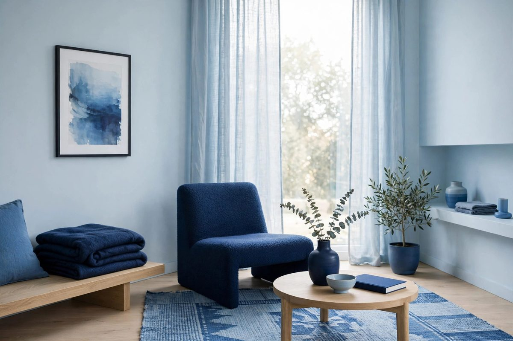
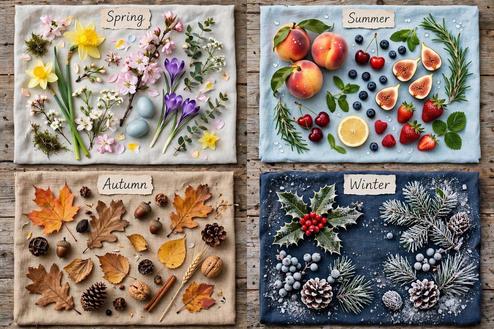

Color Picker
108 76 241
HEX
#6C4CF1 RGB
rgb(108, 76, 241) HSL
hsl(258, 86%, 62%) Matching palette
More color tools
HEX to RGB Converter
Convert a HEX color code into its red, green and blue values, instantly and in your browser.
RGB to HEX Converter
Convert red, green and blue values (0-255) into a HEX color code you can use in CSS.
Palette Generator
Pick a base color and generate complementary, analogous, triadic and monochromatic palettes.
Contrast Checker
Check the WCAG contrast ratio between a text color and a background color, with AA and AAA verdicts.
Color & design guides
 How to Pick Colors for a Website
How to Pick Colors for a Website HEX vs RGB vs HSL Explained
HEX vs RGB vs HSL Explained Building a Color Palette from Scratch
Building a Color Palette from Scratch Color Contrast and Accessibility Guide
Color Contrast and Accessibility Guide Color Psychology in Design
Color Psychology in Design Choosing Brand Colors
Choosing Brand Colors Warm vs Cool Colors
Warm vs Cool Colors Color Harmony Rules for Beginners
Color Harmony Rules for Beginners Using a Color Picker Tool Effectively
Using a Color Picker Tool Effectively
Monochromatic Color Schemes Complementary Colors: A Complete Guide
Complementary Colors: A Complete Guide Analogous Colors in Design
Analogous Colors in Design Triadic Color Schemes Explained
Triadic Color Schemes Explained Color Trends for 2026
Color Trends for 2026 Picking Colors for Dark Mode
Picking Colors for Dark Mode Color-Blind Friendly Design
Color-Blind Friendly Design Gradient Colors: A Practical Guide
Gradient Colors: A Practical Guide
Seasonal Color Palettes Color Mistakes Beginners Make
Color Mistakes Beginners Make Naming Colors in CSS
Naming Colors in CSS